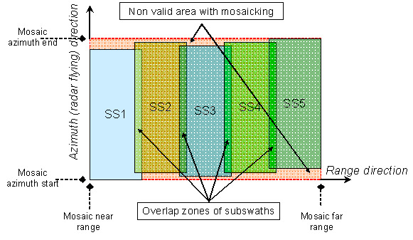

ASAR WSS Mosaicing
ASAR WSS products differ from conventional image products in that the data from the five subswaths
acquired by five antenna beams SS1 through SS5 are stored in separate image records.
The five WSS beams acquire data with a substantial overlap (typically several
hundred range samples, ~ 9 Km). The incidence angle variation of 16 to 43
degrees across beams SS1 through SS5 creates large differences in the nominal
near and far range backscatter intensities.
An ASAR WSS product is delivered as a single
data file containing the subswath data records arranged sequentially.

Use can use the Graph for Deburst, Calibrate, Detect and Mosaic
an ASAR WSS product. It will deburst and split the WSS product into
five subswath products, apply calibration and multilook and then mosaic
them back into one product.